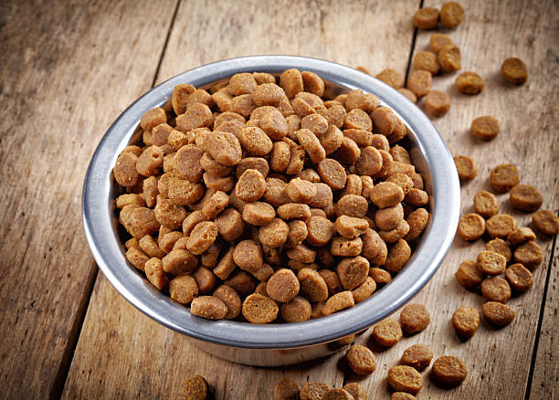

La ecografía es una técnica de diagnóstico muy útil, dado que ofrece mucha información sobre el estado de los órganos internos de manera no invasiva, inmediata y precisa.
Puede ser diagnóstica por sí misma o un valioso complemento de la radiología.
Además, es una herramienta muy útil en la toma de muestras y punciones, al hacerlas ecoguiadas.ver mas